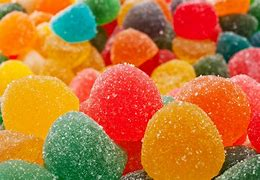
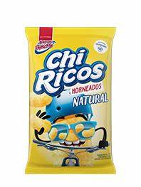
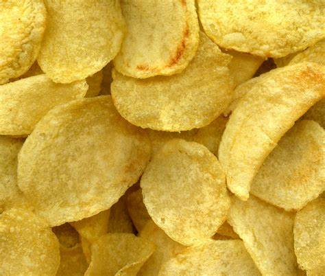
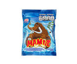
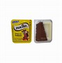
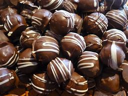
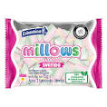
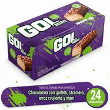

| GOMITAS Golosina masticable dulce, elaborada a partir de gelatinas animales con edulcorantes, saborizantes y colorantes alimentarios añadidos. Sinónimos: pastilla de goma, gominola.  precio: 200 |
CHITOS cuerpo de madera tallado de una sola pieza, formado por dos troncos de cono unidos por la base menor en un anillo.  precio: 2800 |
PAPAS Crum hizo un lote más fino, pero el cliente volvió a devolverlas porque no estaba satisfecho.  precio: 2500 |
| DETODITO PAPA [Papa, Oleína de palma], PLÁTANO [Plátano verde, Oleína de palma], CHICHARRÓN [Pellet de cerdo (Piel de cerdo, Sal, Sabor natural a humo), Oleína de palma y Sal], Sal. precio: 600 | MAMUTS Es una delicia de tres capas con un enorme sabor que acompaña a su personalidad  precio: 500 | NUCITA Nucita fue lanzada al mercado en 1979 por la empresa fundada en el Valle del Cauca y, desde entonces, es el producto icónico de chocolate esparcible en Colombia  precio: 1300 |
| BOMBONES Pieza pequeña de chocolate, que en su interior puede contener licor, crema u otro relleno.  precio:300 | MASMELOS Dulce esponjoso hecho con clara de huevo batida, leche y azúcar, de diversas formas, tamaños y colores.  precio:300 | GOL En principio, el caramelo debía llamarse Gol, ya que relacionaba la forma redonda del dulce con un balón de fútbol que entraba en una portería, que era la boca del consumidor  precio: 500 |